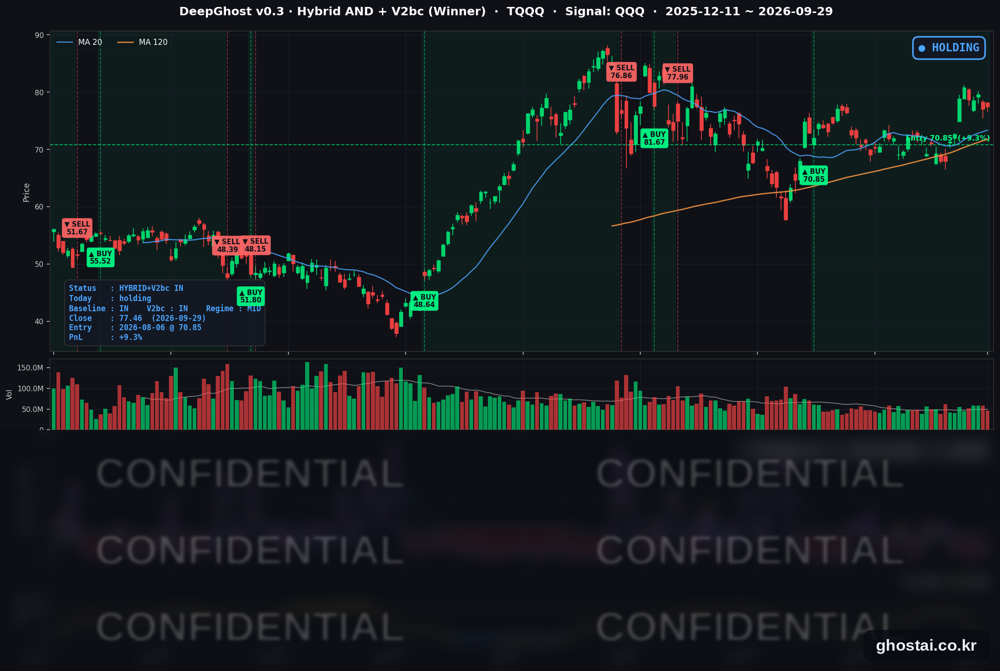

30년물 금리 24년 만의 최고
· Ghost.AI 데일리 리포트
👻 매일 시그널과 히스토리를 홈페이지에서 한눈에 → www.ghostai.co.kr
회원 페이지 안내 — 회원 가입하시면 커버리지 전 종목의 원본 시그널과 분석 레포트를 매일 확인하실 수 있습니다. 회원 페이지는 블로그·유튜브보다 먼저 업데이트됩니다. 선착순 100명을 모집하고 있으며, 이메일과 필명만으로 가입하실 수 있고 서비스 사용료는 받지 않습니다. 가입 신청 후 운영자 승인을 거쳐 이용하실 수 있습니다.
사우디 송유관 재가동 소식에 원유(USO)가 4.44% 내렸지만, 미국 30년물 국채금리는 6거래일 연속 올라 5.594%로 2002년 6월 이후 가장 높은 종가를 기록했습니다. 윌리엄스 뉴욕 연은 총재가 "서두를 필요가 없다"고 하자 10월 인상 확률은 50% 안팎으로 낮아졌고 단기 금리는 내렸습니다. 9월 소비자신뢰지수는 81.9로 2014년 이후 가장 낮았습니다. 지수는 소폭 내렸고, 대형 기술주 중심의 QQQ만 0.19% 올랐습니다.
📊 오늘의 매매 신호
| 항목 | 내용 |
|---|---|
| 오늘 할 일 | ✅ 아무것도 안 해도 됩니다 |
| 포지션 상태 | 📈 TQQQ 보유 중 (IN POSITION) |
| 매수 진입일 | 2026-08-06 (38거래일째) |
| 진입가 → 현재가 | $70.85 → $77.46 |
| 현재 포지션 수익 | +9.33% |
TQQQ 시그널 — IN POSITION
현재 상태: 매수 포지션 유지 중 | 이번 포지션 수익 +9.33%

나스닥100(QQQ)이 +0.19% 오르면서 TQQQ는 +0.55% 오른 77.46달러로 마감했습니다. 1.41% 높게 출발했다가 정규장에서 상승 폭 일부를 반납했습니다. 전략의 평가수익률은 전 거래일 +8.74%에서 +9.33%로 늘었습니다. 전략은 보유를 유지했고, 모델 기준으로 매도 신호까지의 여유는 전일보다 늘었습니다.
장기 금리가 수십 년 만의 수준까지 올랐지만, 전략 상태를 가르는 것은 금리 수준 자체보다 나스닥100이 하루에 크게 내리는 날이 나오는지입니다. 9월 30일 8월 PCE 물가 발표 뒤 금리가 다시 오르고 나스닥100이 크게 내리는지가 이번 주 첫 확인 포인트입니다.
오늘 미국 시장 — 시황 요약
지수 마감
| 지수 | 종가 | 등락률 |
|---|---|---|
| S&P 500 | 7,670.84 | -0.17% |
| 나스닥 종합 | 26,797.54 | -0.09% |
| 다우존스 | 51,349.92 | -0.26% |
| IWM (러셀 2000 ETF) | 279.01 | -0.36% |
| QQQ (나스닥100) | 737.93 | +0.19% |
| TQQQ | 77.46 | +0.55% |
네 지수 모두 0.4% 안쪽으로 내렸고, 대형 기술주 중심의 QQQ만 올랐습니다. QQQ 상승은 메타·브로드컴과 반도체 장비주가 이끌었고, 나머지 종목은 약했습니다. S&P 500 구성종목 중 오른 종목은 38.2%였습니다. 주식은 유가 하락에 높게 출발했지만, 예상보다 크게 낮은 소비자신뢰지수와 장기 금리 상승 속에 정규장에서 상승 폭을 반납했습니다. S&P 500과 나스닥 종합은 모두 사상 최고 종가 대비 -1.64%입니다.
국채 금리 동향
| 만기 | 수익률 | 전 거래일 대비 |
|---|---|---|
| 3개월 | 4.065% | +0.8bp |
| 5년 | 5.063% | -0.5bp |
| 10년 | 5.255% | +1.5bp |
| 30년 | 5.594% | +3.3bp |
30년물은 6거래일 연속 올라 2002년 6월 이후 가장 높은 종가를 기록했습니다. 9월 21일(5.296%)보다 29.8bp 높습니다. 10년물 5.255%는 2007년 6월 종가 고점(5.248%)을 넘었습니다.
단기 금리는 반대로 움직였습니다. 5년물은 0.5bp 내렸고, 재무부 공시 기준 2년물은 4.92%에서 4.89%로 3bp 내렸습니다. 그 결과 30년물과 5년물의 차이는 49.3bp에서 53.1bp로 벌어져 커브가 가팔라졌습니다(스티프닝). 단기 구간은 10월 인상 기대가 줄어 내렸고, 장기 구간은 물가 우려와 대규모 회사채 발행 부담이 거론되며 올랐습니다. 파라마운트는 워너브러더스 디스커버리 인수 자금으로 약 444억 달러 규모의 채권 발행을 발표했습니다. 10년물과 3개월물의 차이는 119.0bp로, 역전은 없습니다.
연준 발언 & 금리 패스
- 윌리엄스(Williams) 뉴욕 연은 총재: 물가 3.7%는 "의심의 여지 없이 너무 높다"고 했습니다. 다만 "9월 조치로 서두를 필요가 없고, 더 많은 정보를 모을 시간이 있다"며, 경제가 전망대로 가면 "연말에 한 번 더 인상하는 것이 적절할 수 있다"고 했습니다.
- 바(Barr) 이사: 물가가 5년 반째 목표를 웃돌고 있고 에너지 가격과 AI 투자 수요가 물가를 끌어올리고 있다고 봤습니다. "물가를 제때 목표로 되돌리려면 추가 정책 조정이 필요할 가능성이 높다"고 했습니다.
- 굴스비(Goolsbee) 시카고 연은 총재: "5년 반 동안 물가가 목표를 웃돈 것은 불장난과 같다"고 했고, 대규모 재정적자가 경기를 과열시킬 수 있다고 지적했습니다.
세 사람 모두 매파적이었지만, 윌리엄스 총재가 추가 인상 시점으로 "연말"을 언급하면서 CME FedWatch 기준 10월 인상 확률은 70.9%에서 49.3%로 낮아졌다고 보도됐습니다(출처별 49~51%). 연준은 9월 16일 정책금리를 3.75~4.00%로 올렸고, 다음 FOMC는 10월 27~28일입니다. 인상 시기는 8월 PCE 물가(9/30)와 9월 고용보고서(10/2)에 달려 있습니다.
오늘의 핵심 이슈
- 유가 4.44% 하락, 그래도 30년물 금리는 상승. 사우디아라비아가 동서 송유관을 다시 가동해 홍해 얀부항 선적을 재개했고, Kpler 집계 9월 중동 원유 수출은 2월 말 전쟁 시작 이후 가장 많았습니다. 트럼프 대통령의 이란 제안 거부는 그대로입니다. 유가가 내린 날에도 장기 금리는 올랐습니다.
- 10월 인상 확률 50% 안팎으로 하락, 소비자신뢰는 12년 만의 최저. 윌리엄스 총재 발언 뒤 10월 인상 확률이 낮아졌습니다. 9월 소비자신뢰지수는 81.9로 예상치(89.2)를 크게 밑돌아 2014년 이후 가장 낮았고, 응답에서는 물가, 특히 기름값에 대한 언급이 크게 늘었습니다. 8월 구인 건수(JOLTS)는 710만 건으로 큰 변화가 없었습니다.
- 메타 AI 에이전트 발표, 애플은 2.66% 하락. 메타가 AI 에이전트 Muse를 쇼피파이·퀵북스·슬랙 등과 연결하는 소상공인용 서비스를 발표하고 3.24% 올랐습니다. 뱅크오브아메리카는 Muse 같은 외부 AI 에이전트가 온라인 쇼핑을 애플 생태계 밖으로 옮길 수 있다고 지적했고(투자의견 매수 유지), 애플은 7월 31일 이후 가장 크게 내렸습니다.
변동성 & 투자심리
VIX는 16.04로 전일(16.07)과 거의 같았습니다. 장기 금리가 수십 년 만의 수준을 이어 갔지만 변동성 지표는 16 안팎에 머물렀습니다. CNN 공포탐욕지수는 31.6으로 "공포" 구간이며, 전일(33.8)보다 낮아져 9월 18일 이후 가장 낮습니다. 한 달 전에는 53.7(중립)이었습니다.
매크로 & 원자재
| 품목 | 종가 | 등락률 |
|---|---|---|
| 원유 (USO) | $143.35 | -4.44% |
| 금 (GLD) | $382.89 | +1.32% |
원유 ETF는 8월 25일 이후 가장 큰 하루 낙폭으로, 9월 4일 이후 가장 낮은 종가입니다. 개장 전 3.05% 낮게 출발했고 정규장에서도 계속 내렸습니다. 금은 전일 3.94% 하락 뒤 일부를 되찾았습니다. 유가 하락에 크루즈주가 크게 올랐고(카니발 +13.41%), 에너지 서비스주는 내렸습니다(SLB -3.15%).
- 9월 소비자신뢰지수: 81.9(8월 88.6). 향후 6개월 기대지수는 63.6으로 3개월 연속 내렸고, 12개월 기대 인플레이션은 평균 6.1%로 올랐습니다.
- 8월 JOLTS: 구인 710만 건, 채용 520만 건, 해고 160만 건으로 모두 전월과 비슷했습니다.
주요 종목 동향
| 종목 | 종가 | 등락률 | 비고 |
|---|---|---|---|
| META | 738.79 | +3.24% | 소상공인용 AI 에이전트 Muse 서비스 발표 |
| AVGO | 355.10 | +1.58% | |
| NFLX | 70.30 | +1.55% | |
| MU | 1,065.08 | +1.05% | 9/30 장 마감 후 실적 발표 |
| AMZN | 246.67 | +0.21% | |
| MSFT | 508.96 | -0.05% | |
| INTC | 115.93 | -0.09% | |
| GOOGL | 340.92 | -0.53% | |
| NVDA | 227.21 | -0.72% | 높게 출발한 뒤 정규장에서 하락 |
| TSLA | 352.84 | -1.29% | 3분기 인도량 10/2 발표 예상(보도) |
| QCOM | 184.10 | -1.80% | 이틀 연속 하락 |
| AAPL | 329.40 | -2.66% | BofA, 외부 AI 에이전트 영향 지적. 9/25 사상 최고 종가 대비 -3.42% |
커버리지 12종목 중 5종목이 올랐지만, 8개 종목이 높게 출발한 뒤 정규장에서 밀렸습니다. 같은 반도체 안에서도 엔비디아·퀄컴은 내렸고 반도체 장비주(어플라이드 머티어리얼즈 +5.19%, KLA +3.89%)는 올랐습니다. S&P 500에서는 카니발이 사상 최대 3분기 실적과 유가 하락에 13.41% 올랐고, FICO는 패니메이·프레디맥이 모기지 가격 산정에 경쟁사 VantageScore 데이터를 반영하기로 하면서 26.52% 내려 1989년 이후 가장 큰 하루 낙폭을 기록했습니다.
이번 주 일정 (미 동부시간)
- 9/30(수) 08:15 ADP 고용, 08:30 2분기 GDP 3차 추정·8월 PCE 물가(한국시간 오후 9시 30분), 쿡 이사·굴스비 총재 발언, 마이크론 실적(장 마감 후)
- 10/1(목) ISM 제조업, 제퍼슨 부의장 "미국 경제와 통화정책" 연설
- 10/2(금) 9월 고용보고서
Ghost.AI — Quantitative AI Investment
Model: DeepGhost v0.3 | Transformer-Based Deep Learning
Coverage: 13 tickers | Updated every trading day after US market close
⚠️ 본 자료는 정보 제공 목적으로만 작성되었으며 투자 권유가 아닙니다. 모든 투자의 책임은 투자자 본인에게 있습니다. 과거 성과가 미래 수익을 보장하지 않습니다.
[유의사항]
- 본 서비스는 불특정 다수를 대상으로 발행되는 단방향 정보 제공 서비스이며, 투자자 개인의 재산 상황·투자 목적·위험 선호도를 반영한 개별 투자 조언이 아닙니다.
- 고스트에이아이 주식회사는 고객과 쌍방향 의사소통(개별 상담, 맞춤형 자문 등)을 제공하지 않습니다.
- 본 콘텐츠는 투자 권유 또는 매매 주문의 청약·청약의 권유에 해당하지 않으며, 최종 투자 판단 및 그에 따른 손익의 책임은 전적으로 투자자 본인에게 있습니다.
고스트에이아이 주식회사